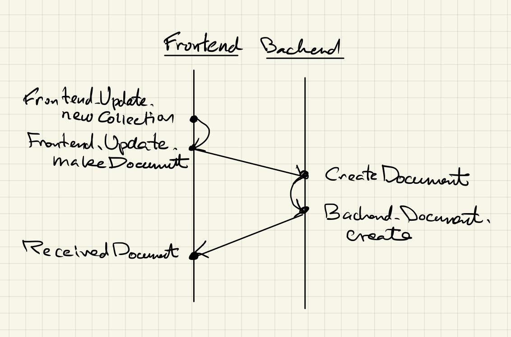

Collection Documents
A collection document is a collection of links to other documents.
Example

Here is the source text:
| title
Quantum Mechanics Notes
[tags jxxcarlson:quantum-mechanics-notes, collection]
| collection
| document jxxcarlson:qmnotes-trajectories-uncertainty
Trajectories and Uncertainty
| document jxxcarlson:wave-packets-dispersion
Wave Packets and the Dispersion Relation
...
About the document format
A collection document is normally written in the L0 markup language
The word collection must occur in the
tag element, and the block | collection
is mandatory.
Note to self: simplify this API!
Following this block, there is a series of | document
blocks. Such a block takes a single argument, which is
either the document id or the document slug, which
has the formUSERNAME:REFERENCE. The document blocks are rendered
as ilinks (internal links). Internal links are handled
by Lamdera via websockets. Http links would reload the
app, which is a bad idea.
Creating a collection document
The bare-metal way to create and update a collection
document is to create an ordinary document, then
edit its text following the format described above.
One can also use the New: Collection button in the
Scripta app. The button calls
Frontend.Update.newCollection. Here, in pictures,
is the full data flow:
 Data flow for creating a collection document
Continuing in words, Frontend.Update.newCollection calls
Frontend.Update.makeDocument, which invokes the command
Lamdera.sendToBackend (CreateDocument model.currentUser newDoc)
The message CreateDocument calls
Backend.Document.create, which is responsible
for creating the document, adding to the application
store, and sending the resulting document back to the
frontend via
Lamdera.sendToFrontend clientId (ReceivedNewDocument handling doc)
Adding a new document to a collection